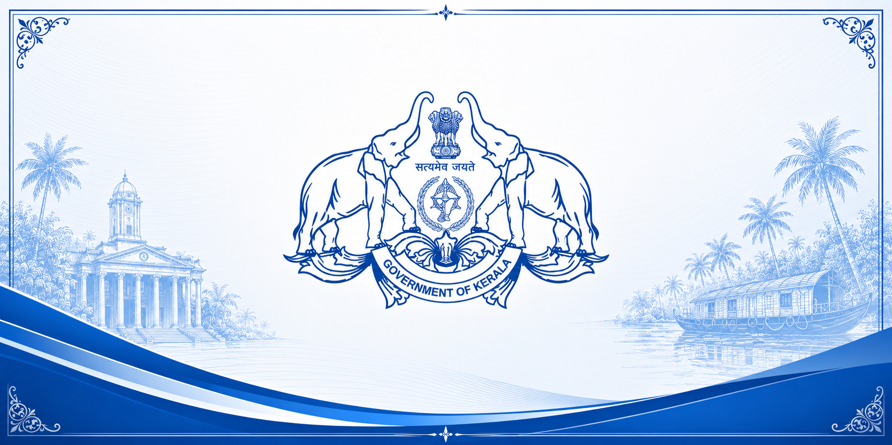

Kerala, known as "God's Own Country," is one of India's most progressive states with high literacy, excellent healthcare, and strong social development indicators. The state government plays a vital role in maintaining these achievements through effective policies and public services.
The Kerala Ministry works closely with various departments to promote sustainable development, economic growth, environmental conservation, and citizen welfare across the state.